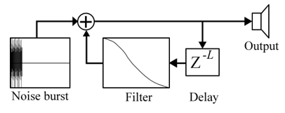

For a project in my Audio Signal Processing class III class, I wanted to create a guitar synthesizer that could sound realistic but not use as much memory as a fully multi-sampled guitar. I started by using the Karplus-Strong algorithm, which is one of the most basic ways to synthesize a plucked string.
 The Karplus-Strong algorithm, shown left, works by using a delay line to simulate a transverse wave (such as a pluck) traveling along a guitar string from the nut to the bridge and back. It uses a noise burst to simulate the excitation, or the actual pluck of the string, and a filter in the delay loop to simulate the absorption of high frequencies by the physical properties of the guitar. It sounds kind of accurate, but I wanted to make it sound even better.
I came across this article from Columbia by Steven Sanders and Ron Weiss, in which they improve the original algorithm by using a more accurate filter and exciter signal. They used MATLAB to analyze an actual recording of a guitar pluck and generate filter coefficients and an exciter signal. The result was a much more accurate sounding guitar pluck.
I used some of their MATLAB scripts with my own guitar pluck sample to generate a loop filter and exciter signal. I then did some processing to my exciter signal to remove unwanted ringing, and finally implemented the algorithm in JUCE using C++ to create a plugin. A demo video of the final plugin is shown above.
The code for this project, including the MATLAB prototype and the JUCE plugin source code, are available on GitHub at: https://github.com/lucasburkholder/Guitar-Synth